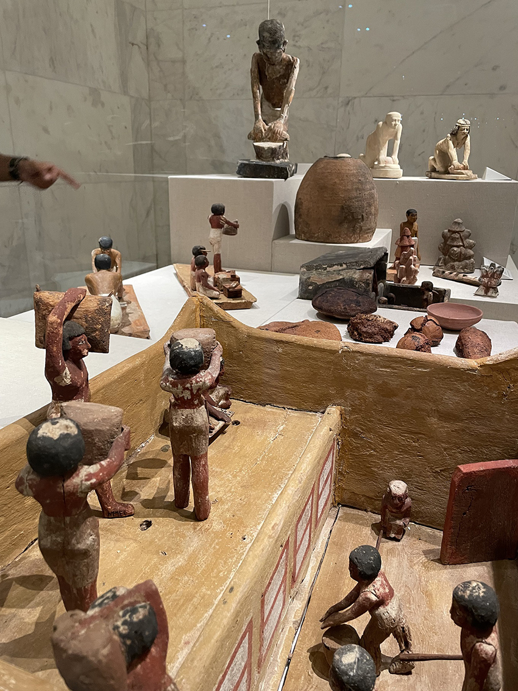
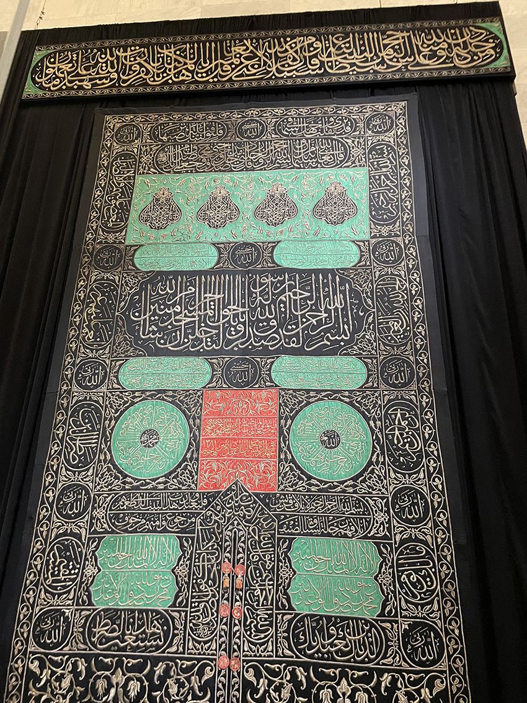
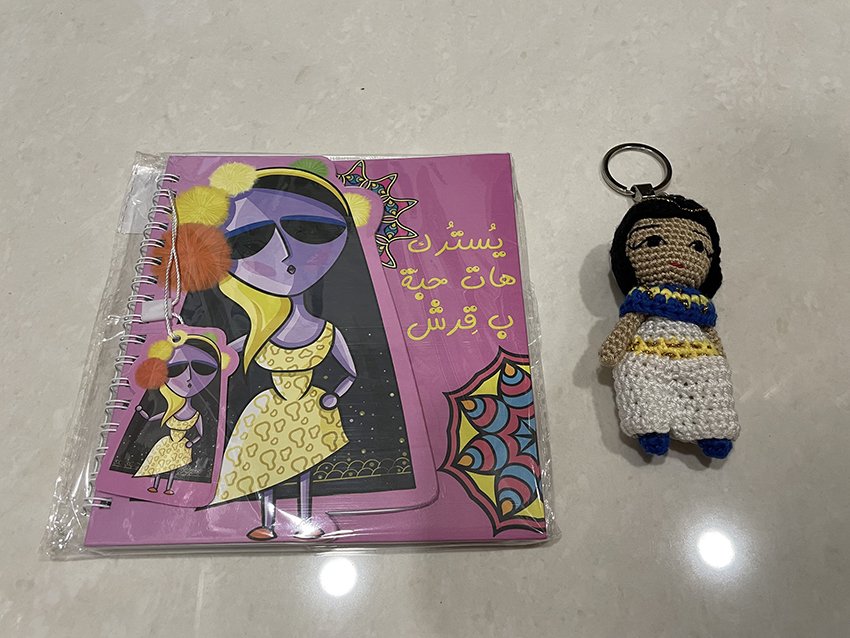

歷經3年的疫情期間，再次飛向神秘又有趣的國度 ｢ 埃及 ｣，隔了3年重新踏上這塊土地，有種既陌生又興奮的情緒，一樣的黃沙飛舞、駱駝馬匹穿梭其中、無交通號誌的瘋狂馬路，想過馬路需要各憑本事，無懼來往車子的喇叭聲勇往直前，常常遇到為此吵架的行人與司機，但通常到最後又一笑泯恩仇彼此釋懷開心的散場，這是埃及有趣又可愛的地方。3年的時間也有很多改變的地方，房屋的建造完成度變高了，不像過去為了減少房屋稅而常常將房子建一半，擁有冷氣的家庭更多了，埃及的物價也悄悄地提高了一些，但人民的笑容依舊未減，這次到開羅最不一樣的地方是，我們又多了一個值得觀光的好地方「埃及文明博物館 National Museum of Egyptian Civilization ｣。
「埃及文明博物館 ｣位於開羅福斯塔特，於2021年4月正式開放給大眾參觀，並將埃及博物館中的20具木乃伊（包括18名法老、2位王后）遷至此館保管與展覽，讓木乃伊可以得到更完善的保護與安置，當年的移居活動，聽說線上直播的觀看人數高達50萬名觀眾，盛況空前，會有此博物館的建成是因為埃及博物館自1902年落成至今，埃及持續發掘發現無數埃及古文物，館內空間已不敷使用，加上館內無空調設施，為改善遊客的參館品質，新博物館的建立迫在眉睫，「埃及文明博物館 ｣的成立與即將開幕位於吉薩的「大埃及博物館 Grand Egyptian Museum ｣，兩間博物館的成立象徵了埃及文物有了新興保存方式與空間，這是埃及文物在地保存的新氣象。
博物館主展區充滿了各式獨特的主題圍繞著古埃及的文明生活，展示了傳統埃及當時的流行文化，展覽突顯了不同時代最重要的成就，從史前時代開始，經過法老時代和希臘羅馬時代、伊斯蘭時代，一直到現代埃及。博物館中的文物充滿了埃及的生活足跡。因為參館時間不多，馬上就走到了木乃伊展廳，木乃伊展廳為了保護這些過去的王者讓其被妥善保存，大家好好的眼睛觀賞，手讓它休息就好，所以不能拍照錄影，展區的布置空間據說是參考埋葬了多位法老的帝王谷所設計出來的，讓我們可以身在其中體會其氛圍，每位法老或王后都有詳細的註明他們的朝代與風光偉業，讓我們如臨其中，感受到當時的宏景，其中最著名的是拉美西斯二世，也是最多人駐足觀賞的時代偉人，每一位法老或王后都被完善的保存好，有些連頭髮與皮膚紋路都清晰可見，可見當時埃及的防腐功力之強大。
離開展區後，大家精神抖擻，眼睛為之一亮，不僅是因為文明古物帶來的震撼，更因展區外有著許多駐店的商家，讓我們可以快樂購物，真的是眼裡，心裡，包包裡都滿載而歸，開始期待大埃及博物館的開幕了，不曉得又會是如何令人驚豔的地方。
|  |
| 每個國家最重要的就是糧食，糧食充裕國家就會強大，可以從展示的雕塑中看出，古埃及人對麵包的重視，麵包是當時不論貴族或平民的主食。 |
|  |
| 此幔廉據說將於今年麥加大朝聖時送往沙烏地阿拉伯麥加禁寺覆蓋在天房（克爾白）上，我們看到的幔廉將會放置在天房的金門外，上面繡滿了可蘭經，相當的莊嚴壯麗。 |
|  |
| 博物館紀念品─可愛的埃及娃娃，有著逗趣的亞歷山卓女孩的文創筆記本。 |